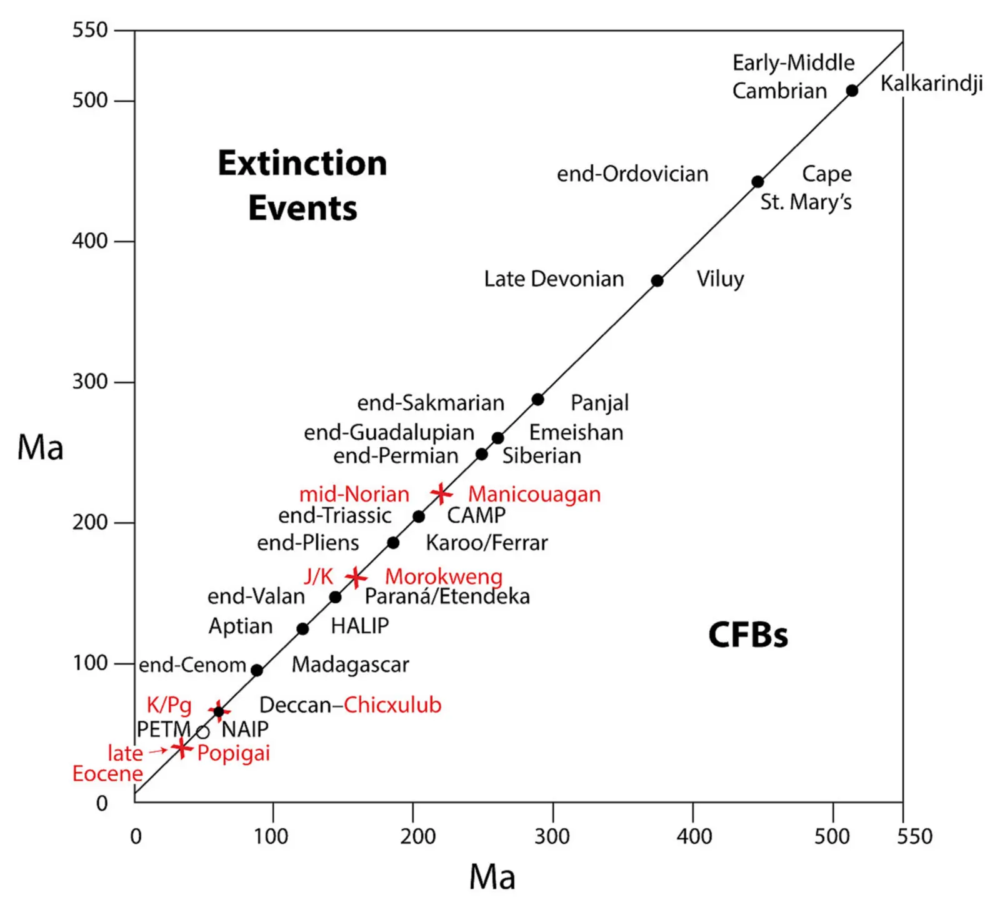

Sixteen mass extinctions of the past 541 million years correlated with 15 pulses of Large Igneous Province volcanism and 4 large impacts
Key finding. The ages of all six major marine mass extinctions of the last 541 million years — end-Ordovician, late Devonian, end-Guadalupian, end-Permian, end-Triassic and end-Cretaceous — correlate significantly with high-precision ages of six continental flood basalt provinces, and six minor extinctions coincide with six further flood basalts, in each case accompanied by stratigraphic mercury anomalies marking the volcanism.

What question did this research address?
Mass extinctions have been attributed variously to volcanism, asteroid impact, sea-level change, and anoxia, often case by case. Dating has improved enough — high-precision uranium- lead zircon and argon-argon ages — to ask whether the coincidences hold up across the whole Phanerozoic record rather than one event at a time.
This paper asked whether the ages of mass extinctions line up with the ages of Large Igneous Province eruptions and large impacts, and whether independent chemical evidence supports the synchrony.
What did we find?
The six major extinctions, each removing 40% or more of marine genera, match the Cape St. Mary's, Viluy, Emeishan, Siberian, CAMP and Deccan basalts.
Mercury anomalies in the strata provide independent proxy evidence that the eruptions and the extinctions were synchronous, rather than merely close in a dating scheme.
Six minor extinctions, removing 15 to 25% of marine genera, coincide with six more flood basalt eruptions — Madagascar, HALIP, Paraná/Etendeka, Karoo/Ferrar, Panjal and Kalkarindji — again with associated mercury anomalies. At least three more fall near oceanic plateau volcanism in the Pacific.
The killing mechanisms come as a package. Extinctions at times of flood basalt eruption were commonly accompanied by ocean anoxia and euxinia, increased ocean acidity, high atmospheric CO2, more ultraviolet-B from ozone destruction, and pulses of high temperature.
Four of the major extinctions and one minor one coincide with concurrent mass extinctions of non-marine vertebrates, indicating the crises were global and struck land and sea together.
Impacts account for a smaller share. The end-Cretaceous extinction overlaps the Deccan eruptions but is exactly coincident with the Chicxulub impact, and the three next largest well-dated craters of 100 kilometres or more — Popigai, Morokweng and Manicouagan — fall at minor extinctions around 37, 145 and 215 million years ago.
Why does it matter?
It shifts the argument from whether volcanism can cause mass extinction to whether anything else needs to. With 12 flood basalts, at least three oceanic plateaus and the four largest impacts accounted for, the authors argue there is little room left for an alternate primary cause.
The mechanisms named — acidification, anoxia, high CO2, heat pulses — are the same processes operating today, which is what makes the deep-time record more than a curiosity about the past.
It also separates the two candidate killers cleanly. Impacts are implicated in a handful of events, most decisively at the end-Cretaceous; volcanism is implicated in nearly all of them.
Citation, data, and code
Michael R. Rampino, Ken Caldeira, and Sedelia Rodriguez (2024). Sixteen mass extinctions of the past 541 million years correlated with 15 pulses of Large Igneous Province volcanism and 4 large impacts. Global and Planetary Change 234, 104369.
Related
- What does the deep-time record reveal about how the Earth system behaves?
- A 27.5-My underlying periodicity detected in extinction episodes of non-marine tetrapods (Rampino et al., 2021)
- Correlation and cyclicity of stratigraphic sequence boundaries and chronostratigraphic stage boundaries over the last 253 million years (Rampino and Caldeira, 2025)
- Periodic impact cratering and extinction events over the last 260 million years (Rampino and Caldeira, 2015)
- Carbon dioxide emissions from Deccan volcanism and a K/T boundary greenhouse effect (Caldeira and Rampino, 1990)